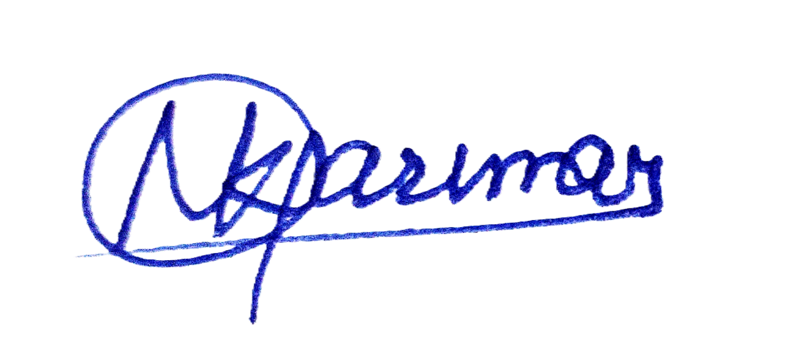
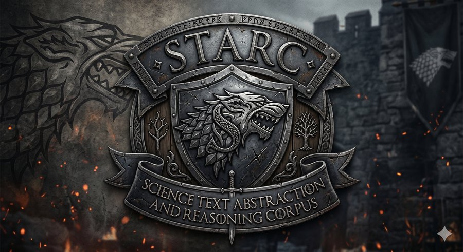
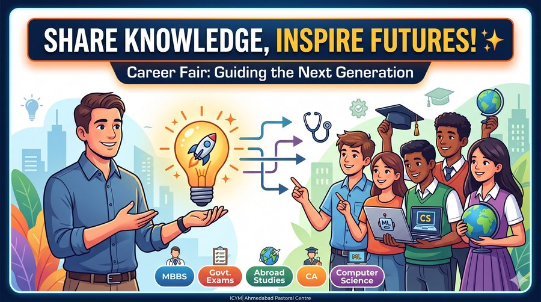
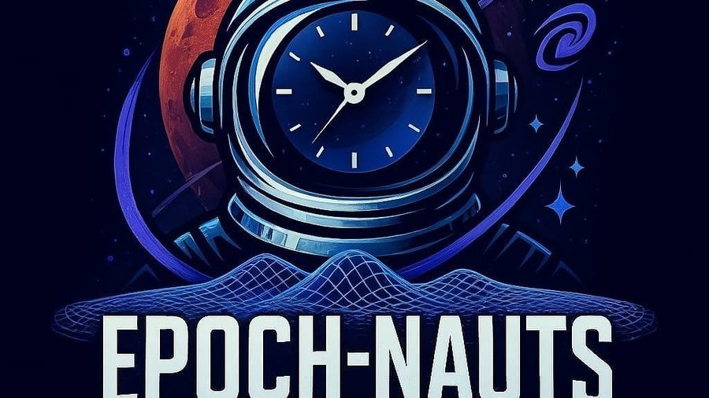
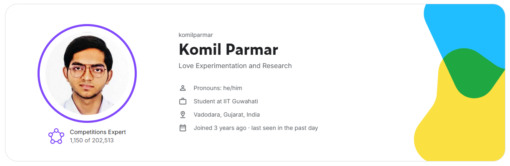

Self-taught ML engineer from Gujarat — TensorFlow Developer Certified, Kaggle Competitions Expert ranked #1150 of 202k+, 3× Kaggle Silver Medalist, and ML Evals Engineer at DataCurve.ai. I learn without the fluff and build things that work.
I didn't apply. A core team member reached out after seeing my LinkedIn profile. All 50 were manually selected — mostly ML experts with strong Kaggle profiles. That's what consistent online presence actually builds.
Read the full story on LinkedInI didn't follow the traditional route — and that's the point. Instead of spending four years in a lecture hall, I chose to go deep on the things that actually matter for ML. That decision led to a TensorFlow Developer Certificate at 18, a Kaggle Expert ranking, three Kaggle Silver Medals, and a role at DataCurve.ai — without sending a single application.
Started in class 8 experimenting with 3D modelling, pivoted to hardware security projects in class 9, and found machine learning by class 10. Completed my first AI course in high school, earned the TensorFlow Developer Certificate at 18, and then made a calculated decision that changed everything.
Rather than spend four years in a curriculum built for a different era, I chose to learn by doing — competing on Kaggle, building open-source projects, hosting webinars, and taking on real work. The results speak for themselves: a global Kaggle ranking, three Kaggle Silver Medals, and an invite-only engineering role — all before most students finish their second year.
"Depth of learning matters more than the institution granting the degree."
Based in Vadodara, Gujarat. I'm drawn to the parts of ML that are still being figured out — meta-learning, generalisation under distribution shift, and understanding why models work, not just that they work. My open-source meta-learning repository reflects that: built from first principles, documented for understanding, not just for use.
Google — earned at age 18
Google — Professional Certificate
DeepLearning.AI Specialisation
Thoughts on ML, self-directed learning, and the road less taken

Three undergrads built a rule-induction benchmark for the Kaggle Measuring AGI competition. By testing models with and without domain hints, STARC pinpoints exactly where reasoning breaks — at domain discovery, or at logical inference. Writeup, benchmark, and dataset all linked inside.

Why teaching others has been the fastest way to deepen my own understanding of ML.
It wasn't luck. It was a specific, consistent approach to building in public that made the right people notice.
A walkthrough of MAML, Prototypical Networks, and the design decisions that only make sense when you build from first principles.

What happens when the problem isn't skill — it's everything that surrounds the moment you need to perform.
From competition-winning hardware prototypes in high school to deep learning research — projects built to solve real problems and understand things deeply.
CV-Based Intelligent Traffic Reduction System
An intelligent Traffic Reduction System that automatically takes the best action depending on live traffic using CCTV feeds. Automatically detects emergency vehicles like ambulances and clears their path to hospitals in advance through an interconnected system.
Class 11-12
Cost-Friendly High-Tech Home Security Suite
A suite of cost-friendly, high-tech innovations to protect homes using an invisible barrier system. Features anonymous alert triggers and laser-based intrusion detection.
High School
Learning How to Learn - Modular Implementation Research
A comprehensive, modular collection of meta-learning implementations built entirely from scratch. Designed for clarity, deep understanding, and experimentation before relying on high-level libraries.
Ongoing
10+ sessions with 200+ total attendees — covering Kaggle, ML, EDA, LLMs, competition strategies, and more
A belief I've carried since class 10 — and one I act on at every opportunity.
Sharing knowledge has never felt like giving something away. Every time I teach, explain, or mentor, I end up understanding the topic more deeply myself. That realisation locked in a habit — if I know something that could help someone, I share it. No gatekeeping, no hesitation. I've held onto this since high school and it's shaped everything from how I interact in the Kaggle community to how I show up for juniors who are just starting out.
Read the post that captures this →Throughout high school at Tejas Vidyalaya, I consistently mentored juniors — helping them with their projects, guiding them through competition prep, and being a go-to person whenever someone needed direction. It wasn't formal. It was just something I did because I could. My teachers acknowledged me for being among the most active and competitive students in the school's recent history — but what I'm equally proud of is always bringing others along on that journey.
I mentored a team from their very first group meeting all the way through to the SIH Grand Finale — one of India's largest national-level hackathons. This wasn't a single session. It meant being present across multiple stages: helping them frame their problem statement, sharpen their approach, prepare their pitch, and stay focused under pressure. Watching them make it to the finale was one of the most rewarding experiences I've had as a mentor. Their team leader acknowledged the journey publicly — the best kind of feedback.
Over 10 sessions attended by college students — juniors, batchmates, seniors, and connections from other institutions. Not theoretical lectures. These were practical, experience-driven sessions built around what actually works, drawn from my own competition and project experience. Topics covered: Kaggle onboarding and competition strategy, EDA and visualization, model selection and ensembling, covariance shift and calibration, LLMs and prompt engineering, resources for every level, and a proven self-directed learning path. The goal was always the same — give people a clear, real-world starting point that no college syllabus provides.
I hosted a Kaggle competition specifically designed for students — inspired by Kaggle's own Playground Series, but created to lower the barrier for those who aren't ready to compete in the main arena. Many students hesitate to enter open competitions because the field feels too wide and the environment too unfamiliar. This competition gave them a safe, structured space to participate among peers at a similar level. Throughout the competition I conducted multiple webinars covering everything from the absolute basics all the way to advanced concepts like ensembling, covariance shift, and calibration. The series concluded with a closing ceremony where all participants shared their experiences, learnings, and solutions — open to non-participants too, making it a learning event even for those on the sidelines. This competition earned me the Community Competition Host title and certificate from Kaggle.
100+
Members
A small, informal WhatsApp community where we share AI and ML resources, discuss cutting-edge concepts, and grow together. But here's the twist—we don't just learn tools, we learn how to learn.
Timely AI/ML updates, news, competitions, and deep-dive discussions on concepts that matter. All the webinars above were conducted by or in collaboration with this community.
We focus on meta-learning—learning to learn and adapt to revolutionary technologies in tech, rather than just mastering existing tools. Stay ahead of the curve, not behind it.
Quality over quantity. We keep the group manageable to ensure meaningful conversations and real connections. Everyone's voice matters.
If you want to join this simple and informal community, reach out to me on LinkedIn!
Competitions Expert — top 0.6% globally. I compete, host, and teach.
Hosted "Students ML Playground Series S1E1" for IITG peers—inspired by Kaggle's evergreen Playground Series.
Achieved Expert tier in Discussions track before it was removed (2016-2025).
Global Rank: #1150 / 202,000+ · Top 0.6%
Expert is a earned tier — it can't be bought or gifted. It means consistent leaderboard performance across multiple competitions. This is the proof layer beneath every other Kaggle achievement shown here.

Official Silver Medal certificates — verified leaderboard achievements across 3 competitions.
Self prompt-tuning with DINOv3: visual prompt tuning, task tokens, orthogonality loss, and aggressive multi-crop bottlenecking to favor generalization over validation-heavy tuning on a tiny 357-image dataset.
Task: trace microscopic sheet surfaces inside a full 3D CT scan of a carbonized 79 AD scroll — so it could be virtually unrolled and read. Team of 5 students. Architecture wasn't the answer; training stability was. Loss weighting, deep supervision, and obsessive checkpoint control with nnU-Net. Public 47 → Private 48 while most teams dropped ~20 ranks. $200k prize pool. Top 10 got paid. We didn't — but we held our rank.
Joined with 2 weeks left. Almost entirely a Data Engineering challenge — extracting ancient text from PDFs, OCR pipelines, cuneiform dictionaries, and multilingual corpora. Ensembled 8 diverse models using MBR decoding (4 candidates each, chrF++ alignment), pushing from 30–34 to 36.3 geo mean on the private LB. Time was the constraint; ensembling was the save.
Right after class 12, I made the decision to skip college and take full control of my learning. This competition reinforced that it was the right call. No medals here — Playground Series is skill-building only — but the real prize was connecting with the community, learning new ML concepts from peers, and publishing my first Kaggle notebook. Discipline and real-world practice beats traditional paths.
"ML is not a rule-based field. At every point, there's something new to discover that you'll most likely never find in existing resources. I'm happy to share, review, rectify, and fight for my hypotheses—even the unreasonable ones."
Open to ML engineering roles, research collaborations, and consulting. If you're working on something interesting, I'd like to hear about it.